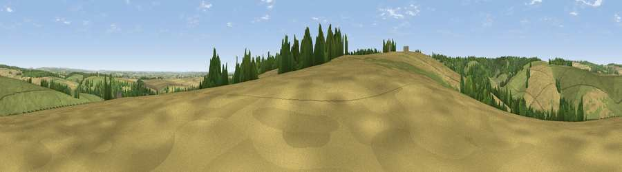

Viewpoint near Winterborne Houghton
#18875 in England · top 35% of its area beats it · near Winterborne HoughtonThe view, rendered

A 360° render of this exact spot computed from the terrain model, tree cover and land cover — summer colours, afternoon light, calibrated against photographs of famous viewpoints. Real trees, hedges and buildings will differ in detail.
The panorama
Grey silhouette: terrain skyline in each direction (720 bearings, Earth curvature and refraction included). Dashed green: skyline with trees (+15 m) and buildings (+8 m) as obstacles. Blue strip: how far the ground is visible on each bearing.
Where the view opens
Wedge length = distance to the farthest visible ground on that bearing (vegetation-aware). Rings at 10, 25 and 50 km.
What fills the view
54% grassland · 32% cropland · 13% woodland
Angular shares of the visible panorama (visual magnitude), not map area. Landscape diversity 0.43 (0–1 Shannon).
Key numbers
More beautiful places nearby
The staircase of upgrades: each row has a higher view potential than everything closer. Driving times are estimates from straight-line distance, calibrated against real road routing — check an actual route before setting out.
| Place | Direction | Drive | Score |
|---|---|---|---|
| Viewpoint near Winterborne Houghton | SW · 1 km | ~3 min | 59.9 |
| Viewpoint near Milton Abbas | WSW · 2 km | ~4 min | 64.2 |
| Viewpoint near Ibberton | NW · 4 km | ~10 min | 71.3 |
| Bell Hill | NNW · 5 km | ~11 min | 73.0 |
| Viewpoint near Woolland | WNW · 5 km | ~11 min | 74.5 |
| Viewpoint near Berwick St John | NNE · 20 km | ~33 min | 78.2 |
| East Hill | SSW · 22 km | ~37 min | 79.6 |
| Viewpoint near Owermoigne | SSW · 23 km | ~38 min | 81.0 |
50.83593, -2.25237 · source: screening · position refined by local search. Computed location — check access rights before visiting.